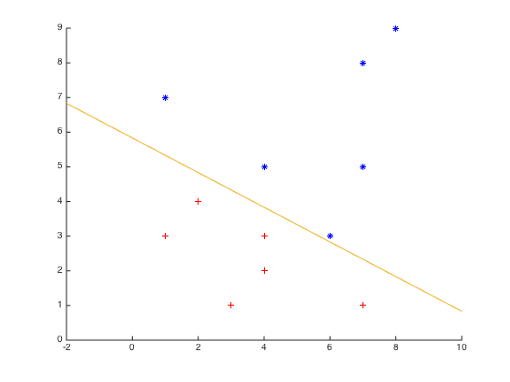
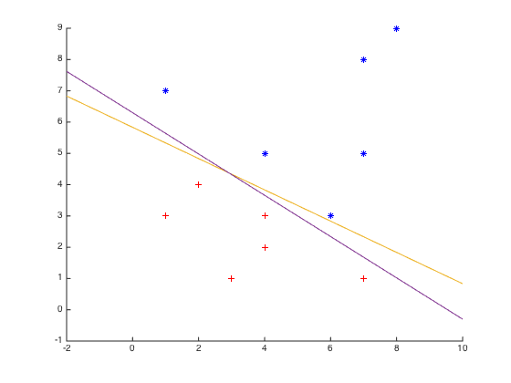
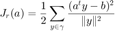

Problem 2
Abhinav Moudgil
201331039
Contents
Single sample perceptron
Method:
Weight vector for classification is updated each time we encounter a misclassified sample. This process is repeated over the training set until all samples are classified.
Code:
clear; clc; close all; tic x = [1 7; 6 3; 7 8; 8 9; 4 5; 7 5; 3 1; 4 3; 2 4; 7 1; 1 3; 4 2]; y(:, 2 : 3) = x; y(:, 1) = 1; % Normalization of vector spaces y(7 : 12, :) = -y(7 : 12, :); %Weight vector initialization a = [1 1 1]; % Perceptron function g = @(a, y) a * y'; figure s = scatter(y(1 : 6, 2), y(1 : 6, 3), 25, 'b', '*'); hold on; t = scatter(-y(7 : 12, 2),-y(7 : 12, 3), 25, 'r', '+'); k = 0; p = -2:0.01:10; n = size(y, 1); while nnz((a * y') > 0) ~= n k = mod(k, n) + 1; yk = y(k, :); if (g(a, yk) <= 0) a = a + yk; end end % Exceptional Handling for a(3) = 0 (Vertical line) if (a(3) ~= 0) q = (- a(2) * p - a(1))/a(3); plot(p, q); else hx = -a(1)/a(2) * ones(1, 10); hy = 1 : 10; plot(hx, hy); end toc
Elapsed time is 0.060265 seconds.
Single sample perceptron with margin
Method:
Single sample rule is followed along with margin 'b' make sure that points are not too close to decision boundry.
Code:
tic x = [1 7; 6 3; 7 8; 8 9; 4 5; 7 5; 3 1; 4 3; 2 4; 7 1; 1 3; 4 2]; y(:, 2 : 3) = x; y(:, 1) = 1; % Normalization of vector spaces y(7 : 12, :) = -y(7 : 12, :); %Weight vector initialization a = [1 1 1]; % Margin b = -100; % Perceptron function g = @(a, y) a * y' + b; %figure %s = scatter(y(1 : 6, 2), y(1 : 6, 3), 25, 'b', '*'); %hold on; %t = scatter(-y(7 : 12, 2),-y(7 : 12, 3), 25, 'r', '+'); k = 0; p = -2:0.01:10; n = size(y, 1); while nnz(g(a, y) > 0) ~= n k = mod(k, n) + 1; yk = y(k, :); if (g(a, yk) <= 0) a = a + yk; end end % Exceptional Handling for a(3) = 0 (Vertical line) if (a(3) ~= 0) q = (- a(2) * p - a(1))/a(3); plot(p, q); else hx = -a(1)/a(2) * ones(1, 10); hy = 1 : 10; plot(hx, hy); end toc
Elapsed time is 0.672500 seconds.
Relaxation algorithm with margin
Method:
Following perceptron criterion function Jp is chosen:

Its gradient is more continuous and smooth. Since longest sample vector can dominate the perceptron criterion function, hence normalization is done.
tic x = [1 7; 6 3; 7 8; 8 9; 4 5; 7 5; 3 1; 4 3; 2 4; 7 1; 1 3; 4 2]; y(:, 2 : 3) = x; y(:, 1) = 1; % Normalization of vector spaces y(7 : 12, :) = -y(7 : 12, :); %Weight vector initialization a = [1 1 1]; %Margin b = 100; % Perceptron function g = @(a, y) a * y' - b; %figure %s = scatter(y(1 : 6, 2), y(1 : 6, 3), 25, 'b', '*'); %hold on; %t = scatter(-y(7 : 12, 2),-y(7 : 12, 3), 25, 'r', '+'); k = 0; p = -2:0.01:10; n = size(y, 1); eta = 2.1; while nnz(g(a, y) > 0) ~= n k = mod(k, n) + 1; yk = y(k, :); if (g(a, yk) <= 0) a = a - ((eta * g(a, yk))/(norm(yk)^2)) * yk; end end % Exceptional Handling for a(3) = 0 (Vertical line) if (a(3) ~= 0) q = (- a(2) * p - a(1))/a(3); plot(p, q); else hx = -a(1)/a(2) * ones(1, 10); hy = 1 : 10; plot(hx, hy); end toc
Elapsed time is 0.022163 seconds.

Widrow-Hoff or Least Mean Squared (LMS) Rule
Method:
In this procedure, we consider all data samples rather than misclassified ones. Margin vector 'b' is taken. This procedure might not yield a seperating hyperplance but a reasonable one.
Code:
tic x = [1 7; 6 3; 7 8; 8 9; 4 5; 7 5; 3 1; 4 3; 2 4; 7 1; 1 3; 4 2]; y(:, 2 : 3) = x; y(:, 1) = 1; % Normalization of vector spaces y(7 : 12, :) = -y(7 : 12, :); %Weight vector initialization a = [1 1 1]; %Margin b = 10; % Perceptron function g = @(a, y) a * y' - b; rownorm = @(x,p) sum(abs(x).^p,2).^(1/p); %figure %s = scatter(y(1 : 6, 2), y(1 : 6, 3), 25, 'b', '*'); %hold on; %t = scatter(-y(7 : 12, 2),-y(7 : 12, 3), 25, 'r', '+'); k = 0; p = -2:0.01:10; n = size(y, 1); theta = 1 * ones(12, 1); eta = 0.5; count = 1; while nnz(rownorm(((eta/count) * repmat(g(a, y)', 1, 3) .* y), 2) < theta) ~= n k = mod(k, n) + 1; yk = y(k, :); a = a - ((eta/count) * g(a, yk)) * yk; count = count + 1; end % Exceptional Handling for a(3) = 0 (Vertical line) if (a(3) ~= 0) q = (- a(2) * p - a(1))/a(3); plot(p, q); else hx = -a(1)/a(2) * ones(1, 10); hy = 1 : 10; plot(hx, hy); end toc legend({'Class 1','Class 2', 'Single Sample', 'Single sample with margin', 'Relaxation with margin', 'Widrow-Hoff'},'FontSize',10) hold off
Elapsed time is 1.606306 seconds.